Amazon Bedrock - Hands On
Now that we have understood the foundational concepts, it is time to begin our hands-on practice using Amazon Bedrock.
-
Before starting, it is important to ensure that the selected region in the AWS console is set to US East (N. Virginia) –
us-east-1, as this region currently provides the best support for Bedrock. -
After verifying the region, the next step is to open Amazon Bedrock in the AWS console. Upon opening the service, the overview page will be displayed, introducing various available features
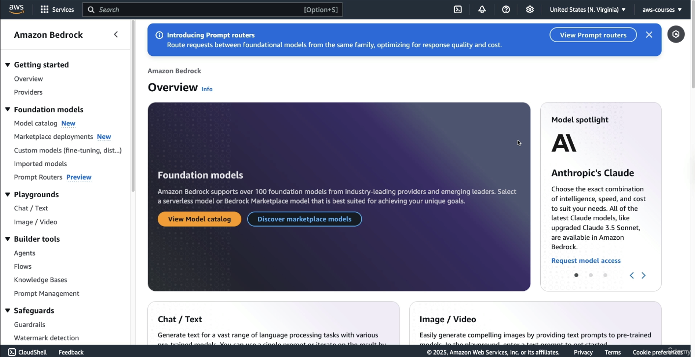
Amazon Bedrock hosts models from multiple AI providers. As of now, there are eight providers available, with more likely to be added in the future. The course focuses on the most important ones.
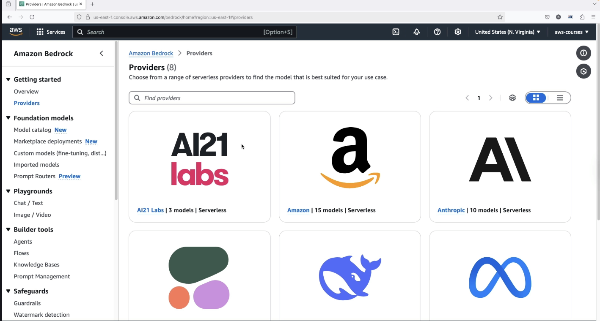
When a provider, such as Amazon, is selected, a dedicated page is displayed containing:
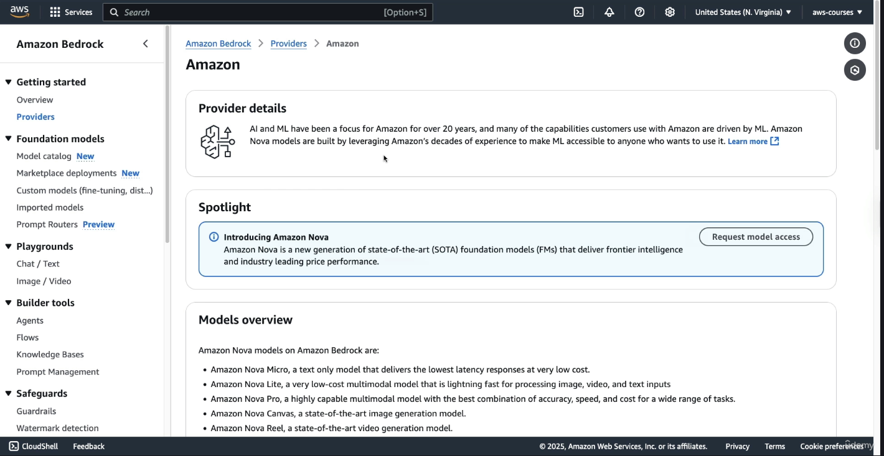
-
A spotlight section and an overview of the provider
-
A description of available models, such as:
-
Nova Micro: A text-only model
-
Nova Pro: A model with a broader category range
-
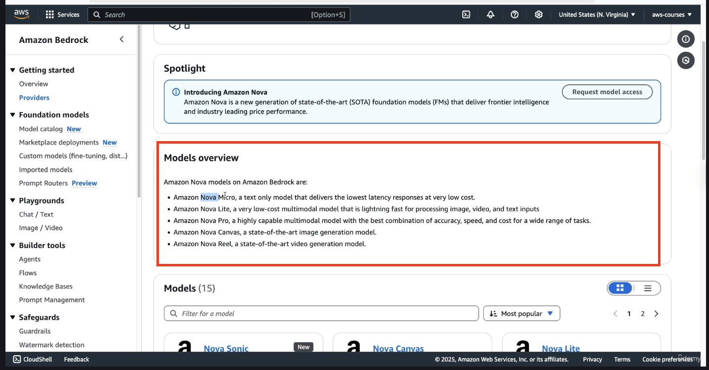
At the bottom, if you scroll down, you have access to all the models:
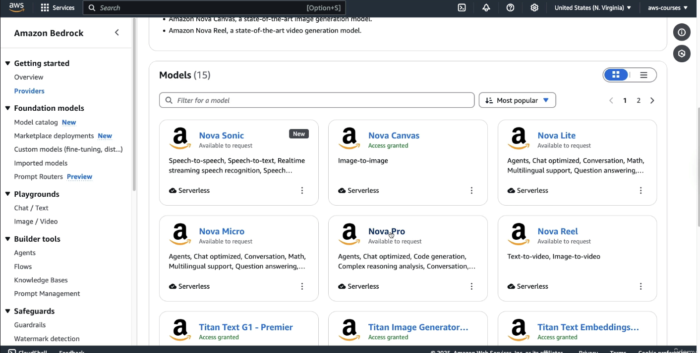
For each model, if you click on Nova Pro. You get description about the model itself:
-
Categories
-
Version
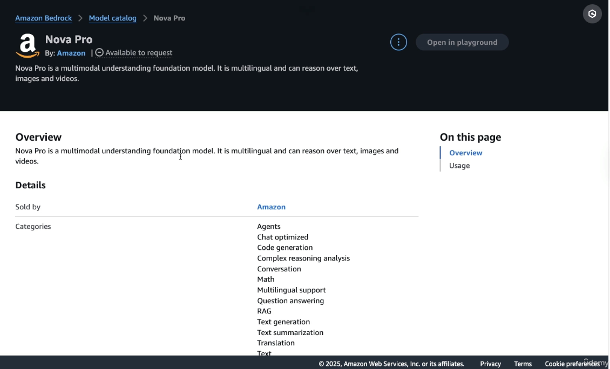
When you scroll down below, you will get details about Usage:
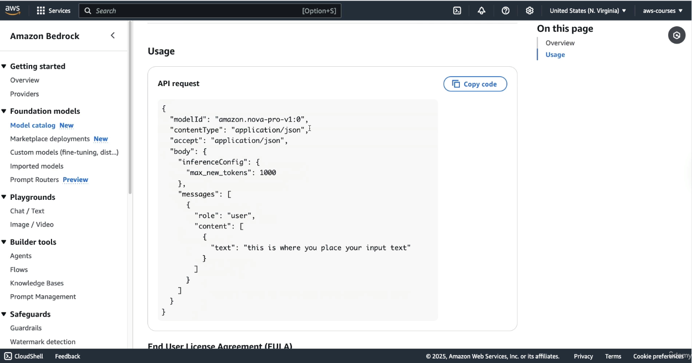
So this is some information around API. In this tutorial, we are going to be using Bedrock in the console.
Note that if you want to integrate Bedrock into your Application, you would need to use API request. So the above image about Usage, something which AWS tells you how to use API requests for the specific type of model
All of this helpful but first we need to get access to these models
Enabling Access to Foundation Models
To interact with any of the foundation models:
-
The user must scroll to the bottom left of the Bedrock page and locate the Model Access section.
-
A full list of models appears, varying slightly between accounts.
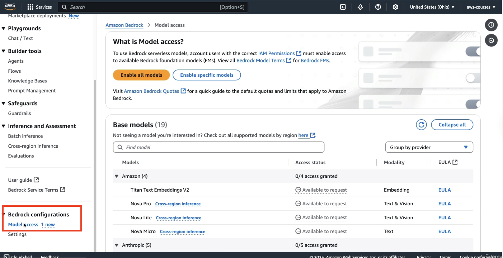
To proceed:
-
The “Enable all models” option should be selected. This action does not incur charges.
-
A few clicks are required: select Next, then Submit to confirm access.
⚠️Although enabling models is free, actual usage of models may result in charges. This course attempts to minimize costs, but users should be aware that no AI model usage is entirely free.
Some models grant access instantaneously, while others may show as in progress and require time for approval. Certain models may prompt for license agreement confirmation. Temporary errors or delays should not be a concern, as enough models will be enabled to complete the hands-on work.
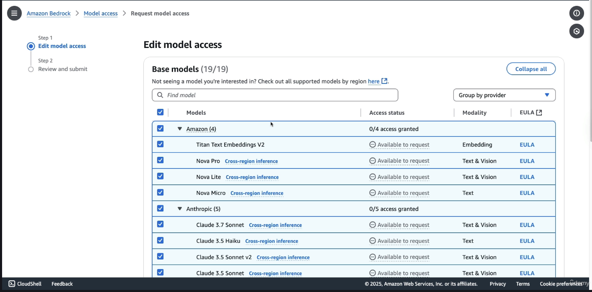
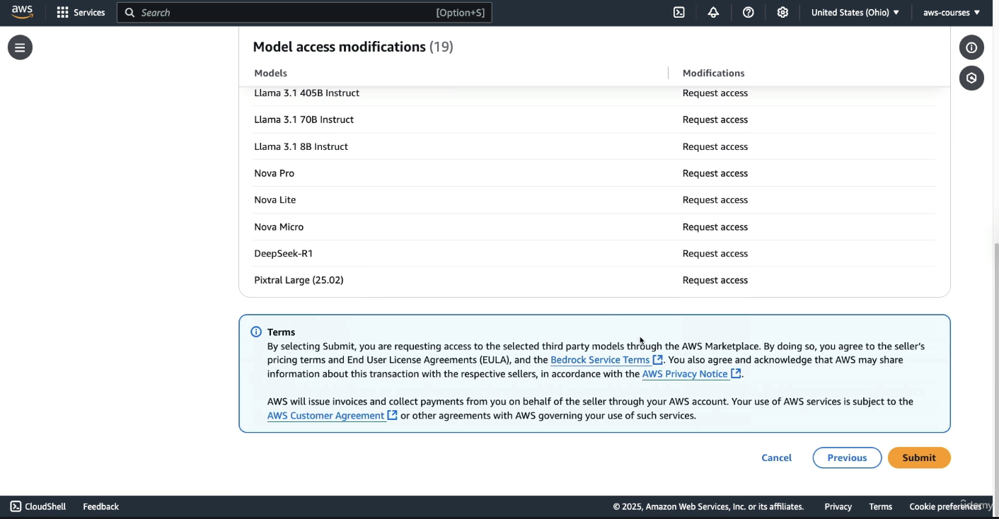
Using the Chat Playground for Text Models
Once model access is enabled:
- The user should navigate to the left sidebar and open the Playgrounds section.
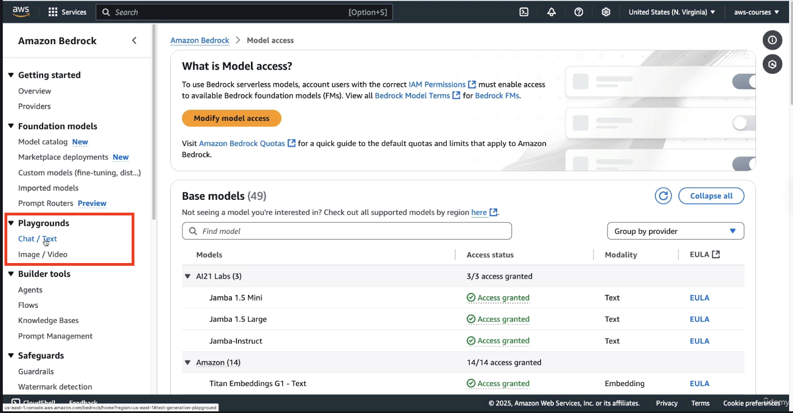
- Inside Playgrounds, selecting Chat (text) opens the interface for prompt-based model interaction.
For this exercise:
- The Single Prompt option should be selected (it means you can only send 1 query and there won't be any follow ups on that prompt)
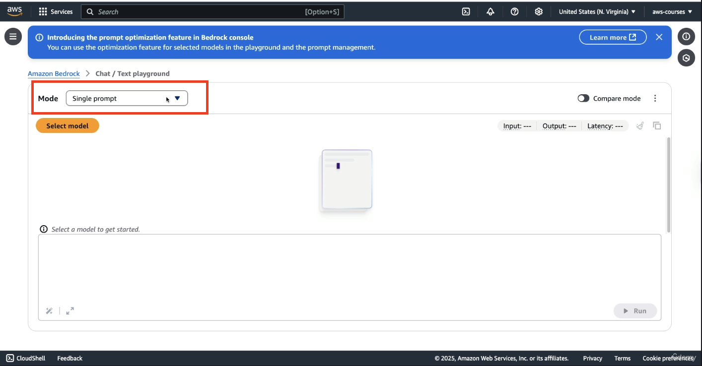
-
You need to click on Select model, and click on Amazon Nova Micro. It is the cheapest and most accessible on-demand model from AWS.
-
Once the model is applied, the user can proceed to input a prompt.
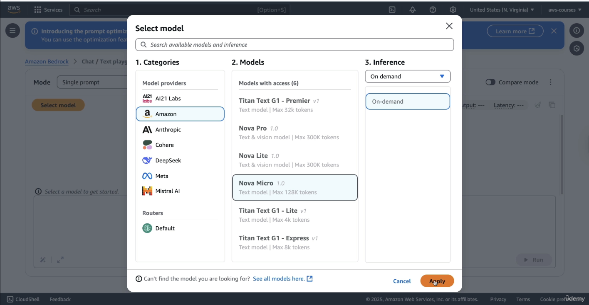
To test the model, a basic prompt is used:
"What is AWS?"
This prompt is sent through Amazon Bedrock to the Nova Micro model, which processes it and returns a structured answer. The model generates a list of key features related to AWS in a numbered format.
Along with the answer, Bedrock displays several important metadata values:
-
The number of input tokens used
-
The number of output tokens generated
-
The latency, which refers to the time it took for the model to generate the response
These statistics are important for understanding pricing and performance.
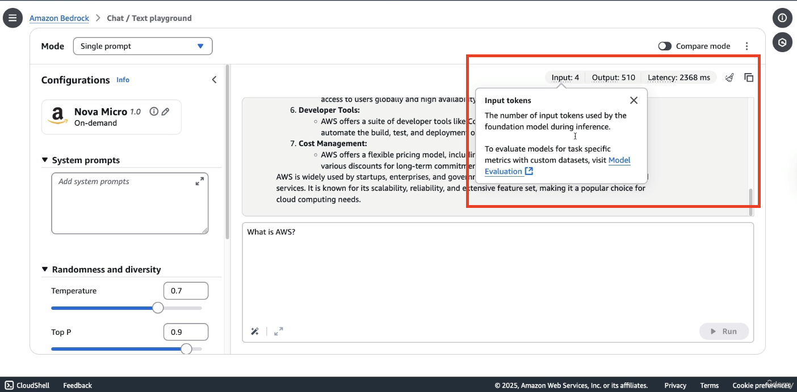
In addition to single-prompt interactions, Amazon Bedrock offers a chat mode, which allows users to conduct ongoing conversations with the model while preserving context.
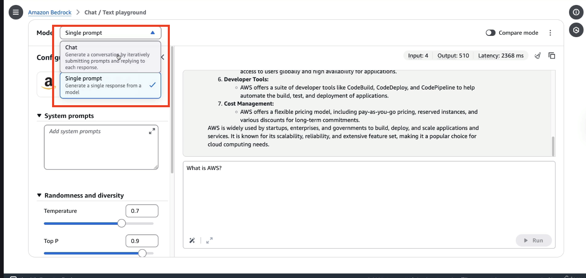
In this mode:
- The user can still select models such as Amazon Nova Pro or Claude 3.5 from Anthropic model (Yes!!! You need to again select the model)
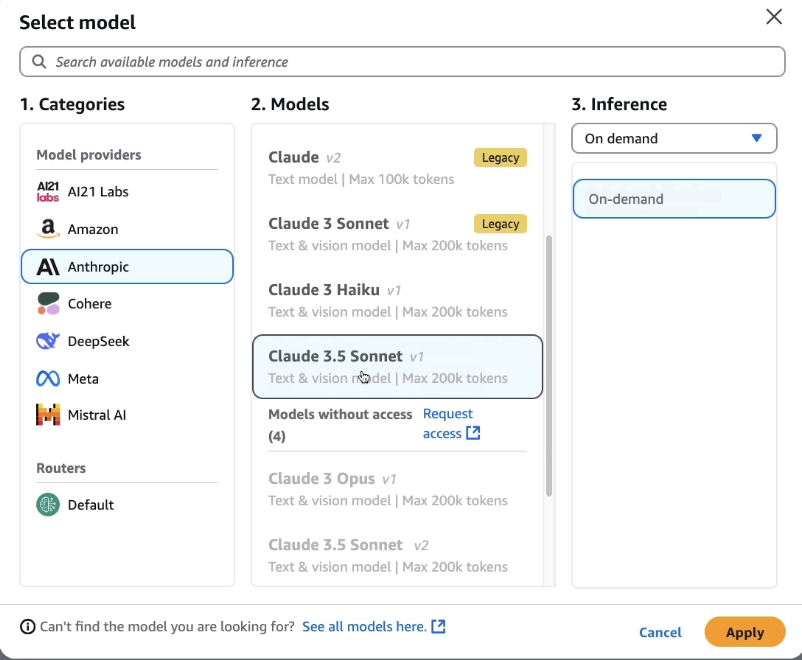
- Once a model is selected, a prompt such as “What is AWS?” can be entered again to observe how the response changes. Upon clicking Run, a response is generated by the selected model.
It is important to note that:
-
Responses will vary across different models and even across runs on the same model. (As seen in Amazon Bedrock Overview Lecture that LLMs are Non-deteministic)
-
Writing style and quality differ significantly between models.
-
Less expensive, lower-performance models tend to produce answers with slightly reduced quality compared to high-performance, premium models.
-
In the chat mode, we have more parameters as you can see on RHS
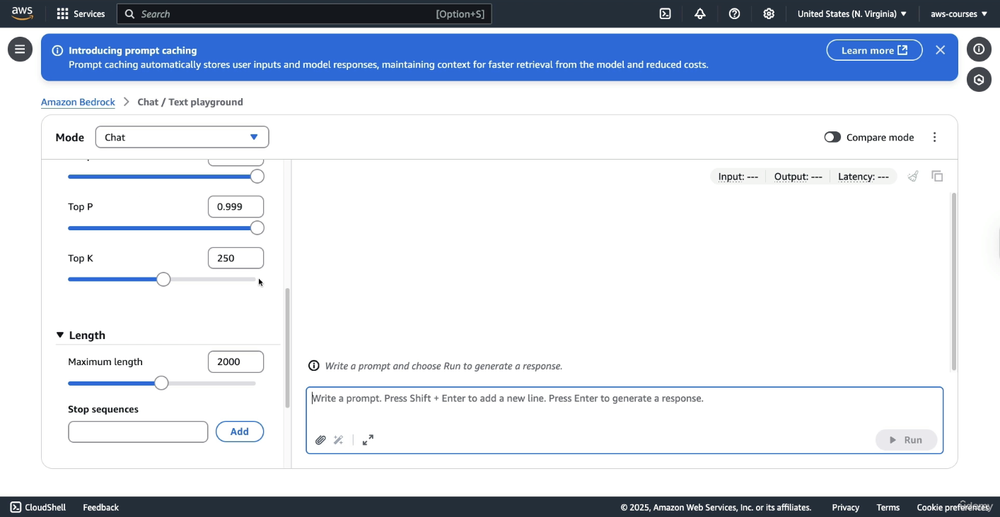
- Also in chat mode, you will find attachments, not every model will provide this option.
For each chat interaction, Bedrock provides:
-
The number of input tokens
-
The number of output tokens
-
The latency, which indicates the time taken for the response to be generated
Generating Images Using Amazon Bedrock
Amazon Bedrock also supports image generation, enabling the creation and modification of visual content directly through its interface.
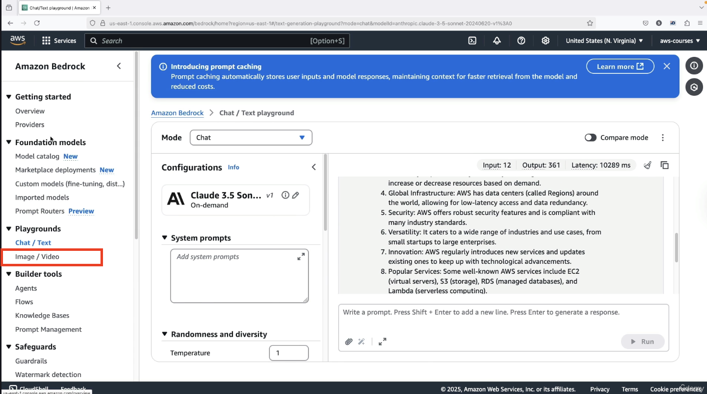
For this demonstration:
- The Nova Canvas model is selected and applied for image generation.
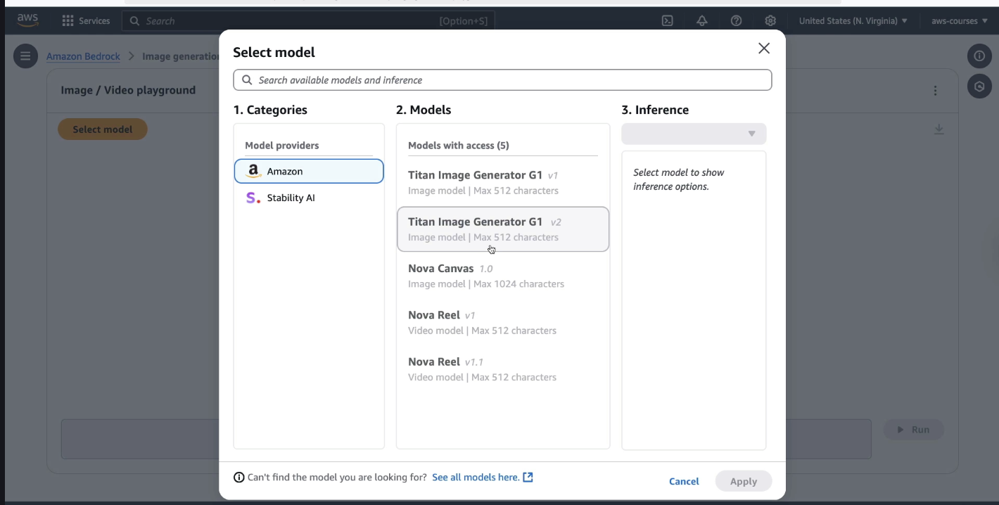
-
Several features are available (under Action tab) beyond simple image creation, including:
-
Generating variations of an image
-
Removing or replacing objects
-
Changing or removing backgrounds
-
A sample prompt is provided to test the image generation capabilities:
“Generate an orange backpack with the AWS logo on it on someone that is teaching a live AWS workshop.”
The model processes the prompt and returns an image:
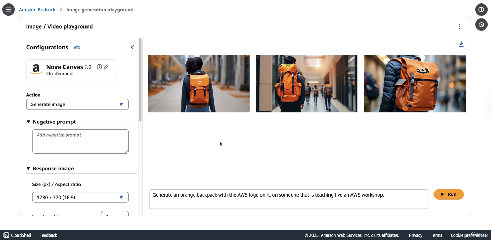
This example shows that while image generation is functional and advanced, not all prompts will be fulfilled perfectly, especially when they involve multiple layers of semantic detail.